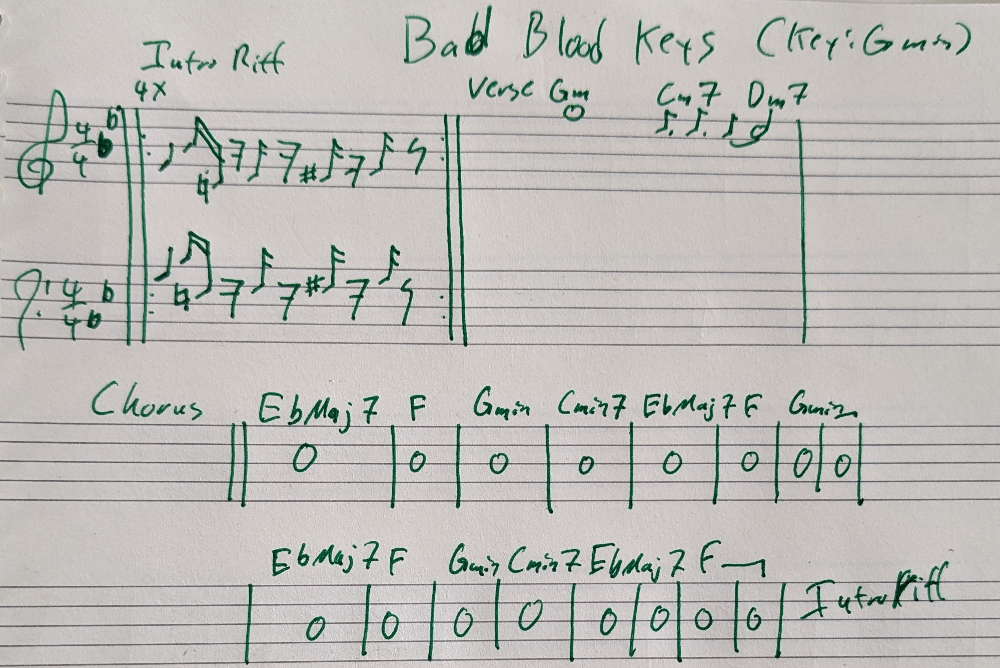
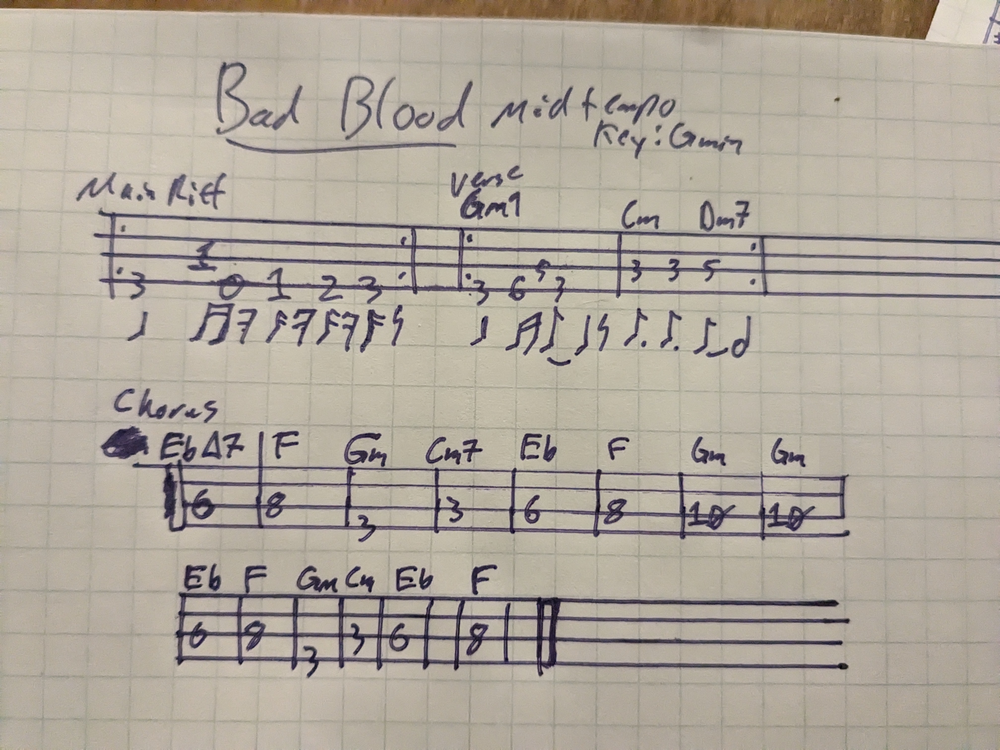
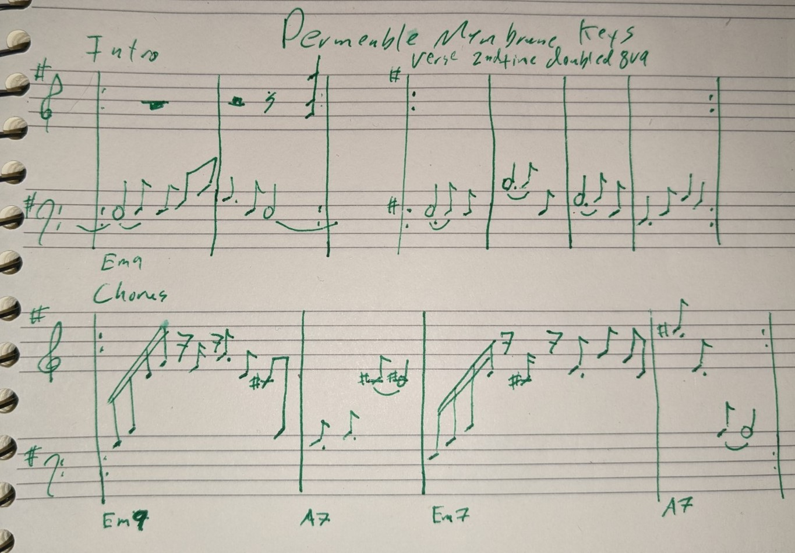
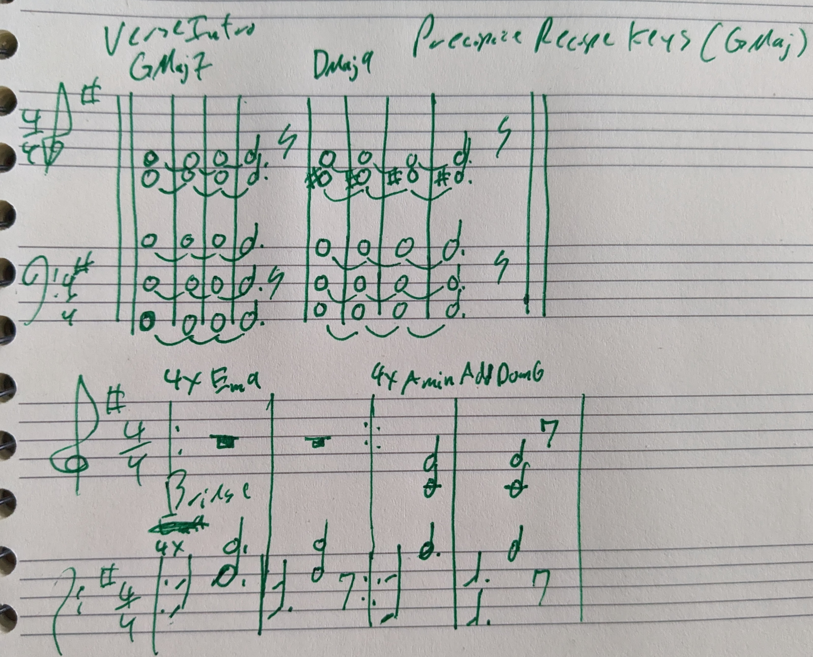
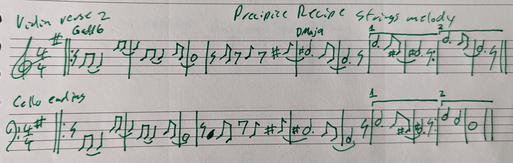
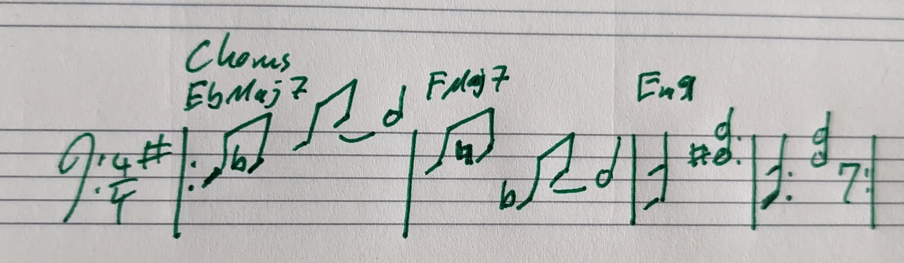
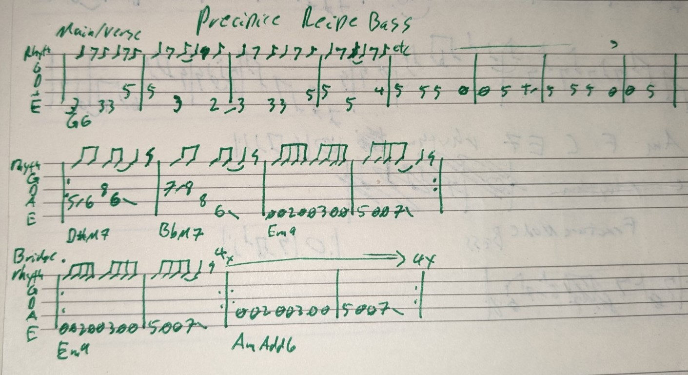
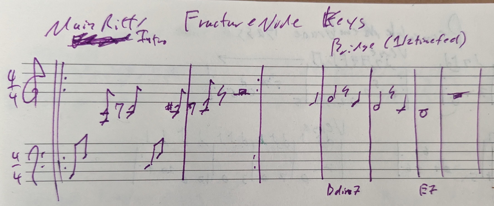
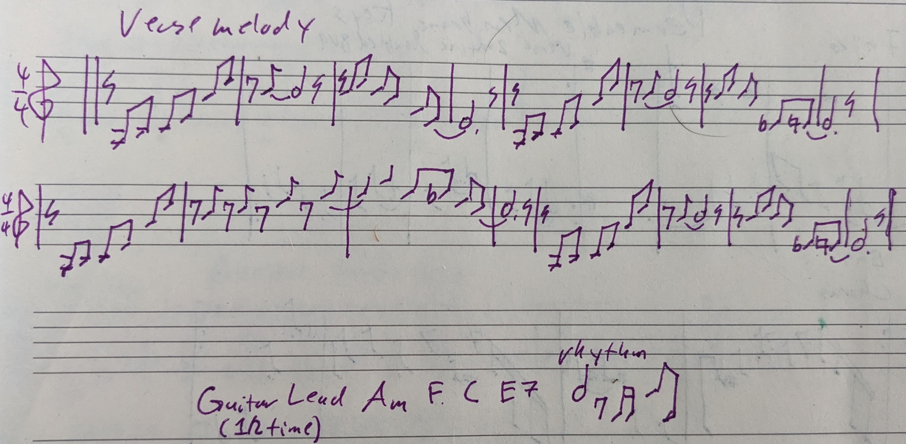
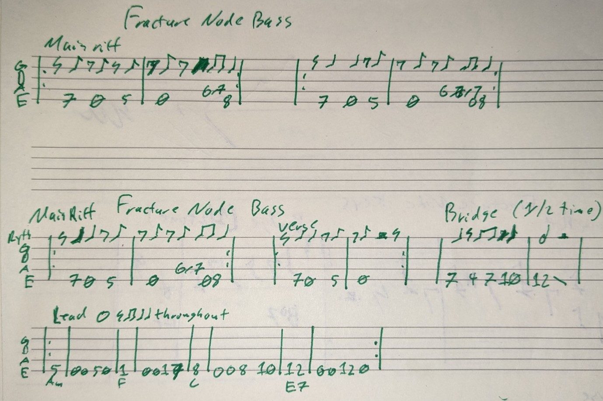

Bad Blood
Mid tempo chill in G minor. After the first chorus there is a brief 8 bar keys lead. Live it'll be however long the keyboardist wants. Let's be patient and stretch the moment.
Structure
- Live I'll play a droning guitar intro over some chord changes, then give a count in to main riff
- Main riff 8x
- verse (Gm Cm Dm) 4x
- Chorus
- main riff (4x)
- keys lead (verse riff, slow build)
- chorus
- main riff (4x)
Drum notes
just keep it chill, yo. never gets above a 6/10 intensity. In general I like things to prob be about 3-8 bpm slower than most folks so if it feels draggy, I'm down as long as it doesn't feel sloppy. I'd prefer a "dipped in molasses" feel to a rushing one.
Keys notes
seriously, this track's keys solo part is your moment! Go for it. Other than that, it really is just banging out the chords on their changes. Really simple and clean.

Bass notes
Honestly, I think I overplayed a bit in the recording. I'll leave the verse riff here, but just outline te chords for the chorus so you can do our thing.

Lullaby
The easiest of the bunch. Meant to be a really simple and gentle song. Just one simple chord progression throughout. Might seem like an improv piece, but I'll play this note for note live so this is the exact structure.
Structure
- main riff on guitar
- Main riff all in
- main riff(3x, slow build under guitar lead, no keys 1st time)
- main riff all in
- main riff just guitar+keys
Drum notes
I got nothin'. Only thing I do that is out of the ordinary is drop the 1, but that's not really a key to the piece
Keys notes
church organ sound makes things all weepy and personal
Chords: G Em C G G D C G
Bass notes
Just keep it chill
See keys above for chord progression
Permeable Membrane
The longest of the tunes we'll do. Not many parts, but their interaction is what could potentially be tricky. Not many parts & the key here is to not speed up. Live the guitar lead may go longer. Watch me for the change back to chorus.
Structure
- intro
- verse 2x (2nd time keys doubled 8va)
- chorus 2x
- verse
- chorus 2x
- intro reprise
- guitar lead jam (chorus progression, slow build)
- chorus
- verse (nice and quiet come down from jam, 2nd time keys doubled 8va)
Drum notes
CHARTS GO HERE
Keys notes

Bass notes
Just keep it chill & enjoy the groove :)

Precipice Recipe
Drum feature song. Take the lead on the bridge for as long as you'd like. Live, this will probably be the first song we play.
Structure
- verse (1st 1/2 gutiar only intro)
- verse (keys play melody instead of guitar, 1st 1/2 just guitar+keys)
- chorus 4x
- 1/2 verse (pause for keys transition @ end)
- verse, keys play melody again
- chorus 4x (last half of 4th time becomes start of bridge)
- bridge (drums take lead. Hit stuff! When you break it down quiet again we'll come out into the last chorus)
- chorus 4x
- verse (keys/guitar only). Last 3 notes retard & play w/ guitar
Drum notes
just a chill deal in general. Again, main thing is to try and keep things from speeding up. More than anything, the bridge part drops down to leave space for drums to lead the way. We'll build wth you and watch for the drop back down to transition to the final chorus. Live you can take more reps of the bridge as you see fit.
Keys notes
There's an overdubbed guitar and strings in these recordings. Live I'll want the keys to play the main melody. I'd actually not want you to use a strings sound, but basically the verse melodies will be played by the keys. Up to you if you'd rather play the keys part of the strings part in the bridge. I actually stopped playing keys when they come in to make room, but I think live the keys part persisting would potentially be really cool.
Intro/verse riff:

Verse melody (guitar in recording):

Chorus:

Bass notes
I do a kinda "take the lead when the drums drop out" in the recording at the end of the bridge. Up to you if you want to do this, but I thought it felt cool. I went all the way to noodle town on mine & probably over played a bit again.... Open to making that a bass lead segment

Fracture Node
Maybe the most challenging, but will be played note-for-note live like Lullaby. I don't want to tinker with the structure of this one at all, really.
Structure
- intro (verse riff, guitar only)
- verse variant 4x
- pre-chorus
- verse variant 4x
- verse, keys instead of trumpet live for melody
- pre-chorus
- verse riff 4x
- verse 4x (quiet, drum pattern, keys melody)
- pre-chorus
- chorus riff 2x, nice build
- chorus riff 4x, guitar lead (dreamy slow burn build. Cosmic guild war had been declared and the flag ship is leaving port)
- chorus riff 2x nice and loud (bring it home, boys!!!)
- verse 4x (super freakin' confident)
Drum notes
Second verse is quiet and I play a simple pattern with toms instead of a normal beat, which I think you don't need to play, but I like the idea and counterpoint happening there.
Short of me playing it on YouTube
Keys notes
again playing the melody instead of horns. Lmk if you want the score for the strings/trumpet part over the chorus. I don't think it is necessary to play, but if you think it'd be dope we can try it.


Bass notes
verse is the same as variant without the last 4 notes
